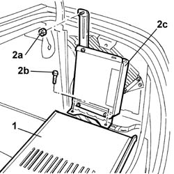
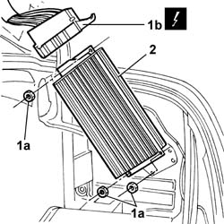

5570T36 Amplifier for speaker system - R.R.
- Path
- Procedures > 55 ELECTRICAL EQUIPMENT > 5570 ACCESSORIES > 5570T CAR RADIO AND CAR TELEPHONE > 5570T36 Amplifier for speaker system - R.R.
- Kind
- repair procedure (removal / refitting; the operation number is the code)
- Applies to
- all engines; all production periods
- Interactive page
- https://sloeber94.github.io/elrnDB-lThss/en/#/150123
Applies to: all engines; all production periods
 Removing
Removing
 Refitting
Refitting- Disconnect the negative battery terminal.
1. Lower the right luggage compartment trim flap.
2. Undo the nut (2a) and the bolts (2b) and place the TV tuner control unit (2c) at the side.

Applies to: all engines; all production periods
1. Undo the fixing nuts (1a) and disconnect the electrical connector (1b).
 | Description | Connector |
|---|---|---|
1b | Radio / CD amplifier | P070A |
| Description | Connector |
|---|---|---|
1b | Radio / CD amplifier | P070B |
2. Remove the amplifier.

Applies to: all engines; all production periods
Refitting
Removing- Fit the amplifier in the housing and tighten the fixing nuts.
- Connect the electrical connector for the radio/CD amplifier.
| Description | Connector |
|---|---|---|
. | Radio / CD amplifier | P070A |
| Description | Connector |
|---|---|---|
. | Radio / CD amplifier | P070B |
- Reposition the TV tuner and tighten it using the nut and the bolts.
- Close the right luggage compartment trim flap.
- Connect the negative battery terminal.